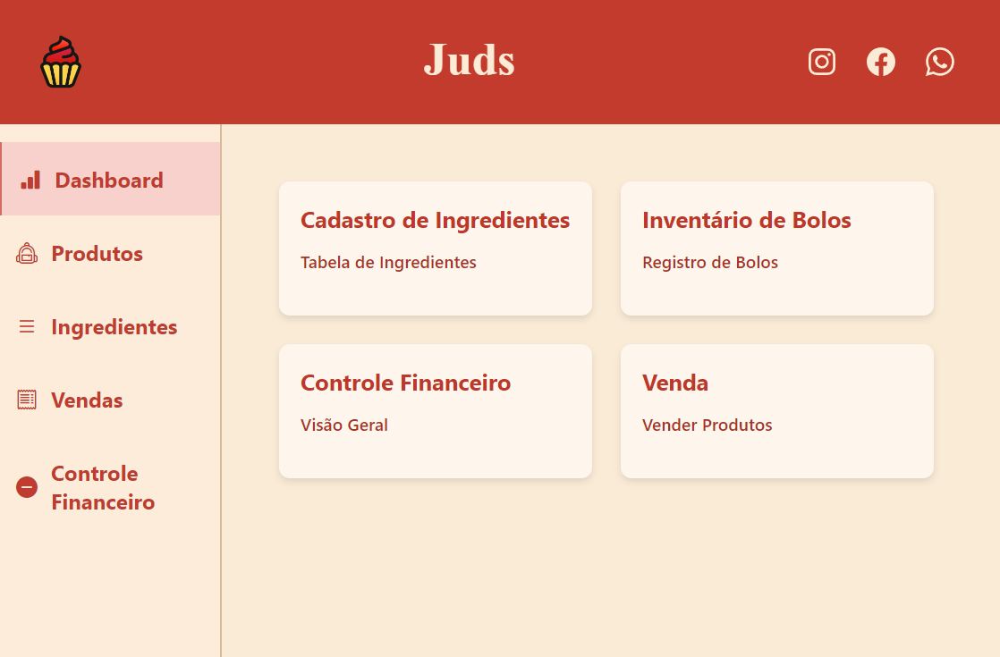
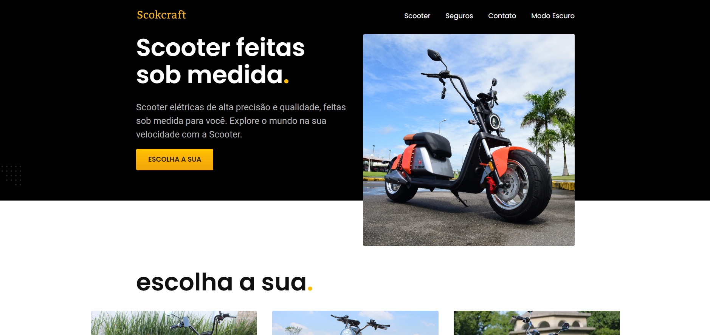
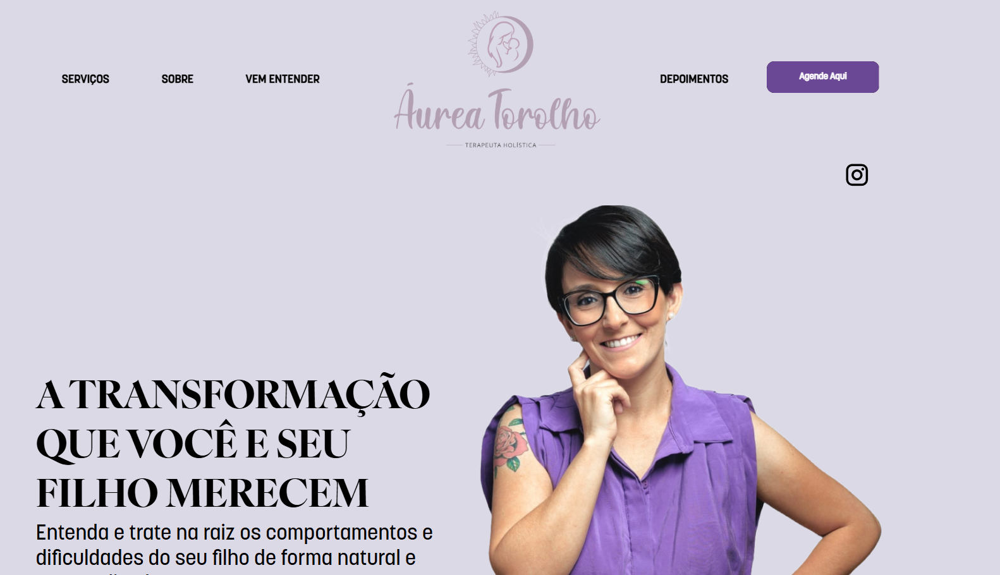
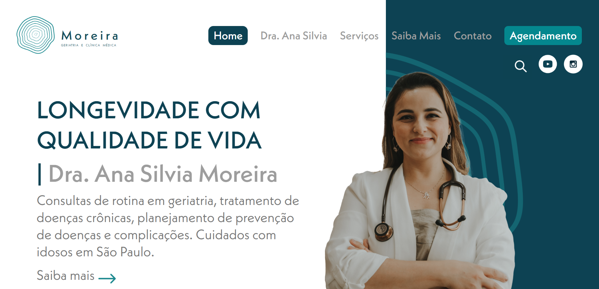

Conheça meus projetos abaixo!
-

Juds
O JUDS é um sistema desktop desenvolvido com Angular, Node.js e Electron, criado para gerenciar e otimizar atividades de forma prática e integrada. Voltado para uso individual, o programa combina funcionalidades web e desktop, oferecendo uma interface moderna, responsiva e eficiente para facilitar processos e centralizar informações.
VER PROJETO -

Scokcraft
Este projeto é uma plataforma especializada na venda de scooters elétricas personalizadas, garantindo alta precisão, qualidade e conforto. Com um sistema eficiente e intuitivo, os usuários podem explorar diferentes modelos, contratar seguros e entrar em contato facilmente para obter mais informações.
VER PROJETO -

Áurea Torolho
O projeto é uma plataforma para atendimento e clínica, oferecendo suporte especializado em terapia maternal infantil e psicologia da Gestação e Nascimento. O objetivo é proporcionar um ambiente acessível onde pacientes possam agendar consultas de maneira rápida e segura.
VER PROJETO -

Moreira
O projeto é uma plataforma para atendimento em geriatria e clínica médica, oferecendo suporte especializado no tratamento de doenças crônicas, prevenção e cuidados para idosos. O objetivo é proporcionar um ambiente acessível onde pacientes possam agendar consultas de maneira rápida e segura.
VER PROJETO